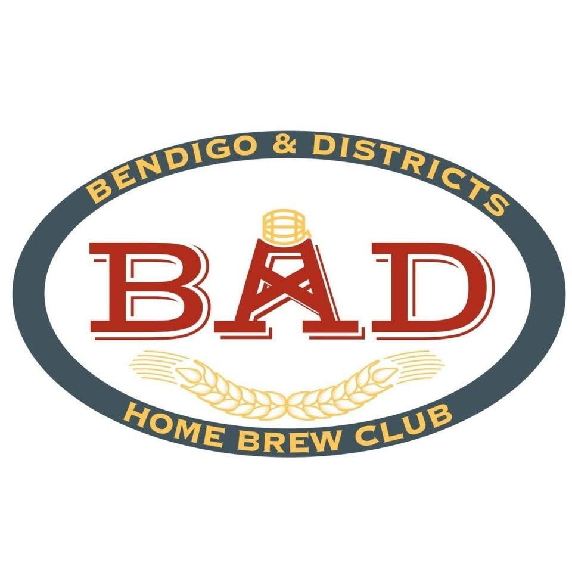

Bayside Brewers
in Melbourne's southern suburbs
Visit club website
Across Victoria
Find your local club, meet other brewers and get involved. Email Vicbrew to add a club or update its details.
in Melbourne's southern suburbs
Visit club website
in Melbourne's eastern suburbs
Visit club websiteMelbourne's Inner-Northern Suburbs
Visit club website



Vicbrew offers cash sponsorship towards clubs running an open competition in Victoria. Terms are as follows
contact admin@vicbrew.org to apply for sponsorship offer.